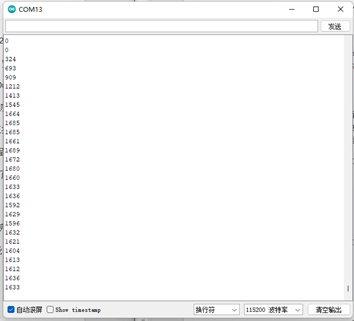

Use of onboard resources
This chapter mainly describes the basic usage of the peripherals of the PicoW-S3 main control board through some sample projects. Through the following projects, you can modify and complete your own projects.
The PicoW-S3 peripherals mainly include: UART, I2C, SPI, ADC, PWM, DAC, etc.
Preparation before starting
The MicorUSB on the BPI-PicoW-S3 development board uses the native USB interface of the ESP32-S3 instead of the traditional USB to TLL chip.
In order for your development board to download programs correctly, you need to set the BPI-PicoW-S3 to download mode, there are two methods:
Connect to the computer via USB, use tweezers to short the BOOT, then press the Reset button and release it, and finally disconnect the BOOT short.
In the state of disconnecting all power supplies, short-circuit BOOT, then plug the development board into the computer, and finally disconnect the BOOT-short circuit.
At this time, you can see more than one COM port in the device manager

Select this port in the IDE

Project 1 Serial port experiment
In the very first chapter, we uploaded a Blink program to test the LED status lights on the board. Now, we use the UART serial port and print the timing data every second.
Required components
PicoW-S3 Motherboard X 1

Hardware connection
No other sensors are required for this project, so just connect the PicoW-S3 to a computer via USB.
Enter code
Open the Arduino IDE. Although it is possible to copy the code directly, we recommend that you enter the code manually to familiarize yourself with it.
code show as below:
Expand to view
void setup()
{
Serial.begin(115200); //Set serial communication baud rate
}
void loop()
{
static unsigned long i = 0; //define variable i
Serial.println(i++); //output i after adding one
delay(1000); // delay 1 second
}
After the input is complete, click "Compile" to check the code for errors. After making sure there are no errors, you can start uploading. After clicking "Upload", the IDE will send the code to the PicoW-S3 motherboard. After the upload is complete, you need to press the reset button so that the code can run normally
Experimental phenomena
After completing the upload in the previous steps, open the serial monitor that comes with the Arduino IDE, and you can see the following print information:

Project 2 PWM (breathing light)
Breathing light, that is, let the PicoW-S3 drive the LED light through PWM to realize the brightness gradient of the LED, which looks like it is breathing. For an explanation of PWM, please read the Knowledge Extension section.
Required components
PicoW-S3 Motherboard X 1
LED X 1 (recommended to connect a resistor in series to limit current)

Hardware connection
Just connect the LED to GPIO13 of PicoW-S3, the long one is connected to GPIO13, and the short one is connected to GND
Enter code
Open the Arduino IDE. Although it is possible to copy the code directly, we recommend that you enter the code manually to familiarize yourself with it.
code show as below:
Expand to view
#define LED_CHANNEL_0 0 //Set channel 0
#define LED_TIMER_13_BIT 13 //Set 13-bit timer
#define LED_BASE_FREQ 5000 //Set the timer frequency bit to 5000Hz
#define LED_PIN 13 //Set LED light
int brightness = 0; // LED brightness
int fadeAmount = 1; // number of LEDs
//Set the brightness of the led light
void ledcAnalogWrite(uint32_t value, uint32_t valueMax = 255) {
//calculate duty cycle
uint32_t duty = (LED_BASE_FREQ / valueMax) * min(value, valueMax);
//set duty cycle
ledcWrite(LED_CHANNEL_0, duty);
}
void setup() {
ledcSetup(LED_CHANNEL_0, LED_BASE_FREQ, LED_TIMER_13_BIT); ledcAttachPin(LED_PIN, LED_CHANNEL_0);
}
void loop() {
ledcAnalogWrite(brightness); brightness += fadeAmount;
if (brightness <= 0 || brightness >= 255) {
fadeAmount = -fadeAmount;
}
delay(30);
}
After typing, click the "Compile" button to check the code for errors. After confirming that there are no errors, you can start uploading, click the "Upload" button . The IDE will send the code to the PicoW-S3 board. After the upload is complete, you can see the LED light next to the Type-C start to "breathe"!
Now let's review the code and hardware to see how it works.
Knowledge learning
What is a PWM control signal?
PWM (pulse-width modulation) pulse width modulation, the MCU (microcontroller) controls the on-off of the switching device, so that the output terminal gets a series of pulses of equal amplitude, and these pulses are used to replace the sine wave or the required waveform. As shown below:
Among them, tON is the high-level duration, tPWM is the period of the PWM wave, tPWM-tON is the low-level duration, and the duty cycle refers to the proportion of the high-level duration to the entire cycle, namely D=ton/tPWM.
Code Analysis
The PWM of the PicoW-S3 is much more advanced than the ordinary Arduino UNO. The analogWrite function cannot be simply used to drive the PWM, but the timer function and related frequency parameters need to be set to work.
#define LEDC_CHANNEL_0 0
Defines the channels used by the timer. PicoW-S3 has a total of 16 channels, and channel 0 is used here.
#define LEDC_TIMER_13_BIT 13
The timer is defined as a 13-bit timer, that is, the maximum count of the timer is 2 to the 13th power.
#define LEDC_BASE_FREQ 5000
This is the frequency at which the timer is set, in Hz. The next brightness and fadeAmount parameters represent the duty cycle of the PWM and the value for each change, respectively.
void ledcAnalogWrite(uint32_t value, uint32_t valueMax = 255)
This function calculates the PWM duty cycle and sets the PWM duty cycle, similar to Arduino's analogWrite function. As you can see, the maximum value of the passed parameter is 255, which is for compatibility with analogWrite.
ledcSetup(LEDC_CHANNEL_0, LEDC_BASE_FREQ, LEDC_TIMER_13_BIT);
ledcAttachPin(LED_PIN, LEDC_CHANNEL_0);
These two functions are PicoW-S3 timer setting functions. The function prototype and principle are not described here. If you are interested, you can look at the underlying source code (source address: C:\Users\“your-PC”\AppData\Local\Arduino15 \packages\esp32\ hardware\ adafruit_metro_esp32s2 \0.0.3\libraries\ESP32), you only need to know how to use these functions to set the relevant timer.
About what is a PWM signal, it has been explained before, and it will not be explained here.
Note: Any pin of PicoW-S3 can be configured as PWM output, you can try to modify the code to complete your project.
Project 3 ADC
ADC (analog-to-digital converter or A/D converter) refers to converting an analog signal into a digital signal. The ADC of PicoW-S3 is 13-bit, the maximum output value is 8191, while the Arduino UNO is 10-bit, and the maximum output value is 1023. Therefore, the accuracy is higher than that of Arduino UNO, and the conversion rate is faster, and in use Compatible with Arduino analogRead function, you can read it directly.
Required components
Analog angle sensor X 1

Breadboard X 1

PicoW-S3 Motherboard X 1
Hardware connection
Plug the potentiometer to the PicoW-S3 motherboard, and then plug the analog angle sensor to IO2 (IO2 is used in the experiment). After the components are connected, use the USB cable to connect the PicoW-S3 and the computer.
Enter code
Open the Arduino IDE. Although it is possible to copy the code directly, we recommend that you enter the code manually to familiarize yourself with it. code show as below:
Expand to view
void setup() {
// put your setup code here, to run once:
Serial.begin(115200);
}
void loop() {
// put your main code here, to run repeatedly:
Serial.println(analogRead(2));
delay(100);
}
After the input is complete, click "Compile" to check the code for errors. After making sure there are no errors, you can start uploading. After clicking "Upload", the IDE will send the code to the PicoW-S3 motherboard. After the upload is complete, open the serial monitor of the Arduino IDE, rotate the analog angle sensor, and you can see the value changes in the serial monitor, as shown in the following figure:

Code Analysis
Since the ADC of PicoW-S3 is fully compatible with Arduino, the analogRead function will not be explained too much here.
Note: If you are not particularly familiar with the basic functions of Arduino, you can click the link to learn.
Project 4 I2C
The I2C of PicoW-S3 can be configured to any I/O port, and you can configure it by passing relevant parameters. For the convenience of use, we have configured I2C by default, which is fully compatible with Arduino, the default configuration pins can be seen in Chapter 1 Introduction. This project is based on I2C default configuration to drive OLED display.
required components
I2C OLED-12864 Display X 1

Breadboard X 1
PicoW-S3 Motherboard X 1
Hardware connection
Plug the PicoW-S3 motherboard into the breadboard, then plug the OLED display into the I2C port. (SDA is 33, SCL is 34) After the components are connected, use the USB cable to connect the PicoW-S3 and the computer.
Enter code
Open the Arduino IDE. Although it is possible to copy the code directly, we recommend that you enter the code manually to familiarize yourself with it. code show as below:
Expand to view
#include
int UG2864Address = 0x3C;//OLED UG2864 device 7-bit address
prog_char F8X16[][16] PROGMEM =
{
0x00,0x00,0x00,0x00,0x00,0x00,0x00,0x00,0x00,0x00,0x00,0x00,0x00,0x00,0x00,0x00,// 0
0x00,0x00,0x00,0xF8,0x00,0x00,0x00,0x00,0x00,0x00,0x00,0x33,0x30,0x00,0x00,0x00,//!1
0x00,0x10,0x0C,0x06,0x10,0x0C,0x06,0x00,0x00,0x00,0x00,0x00,0x00,0x00,0x00,0x00,//"2
0x40,0xC0,0x78,0x40,0xC0,0x78,0x40,0x00,0x04,0x3F,0x04,0x04,0x3F,0x04,0x04,0x00,//#3
0x00,0x70,0x88,0xFC,0x08,0x30,0x00,0x00,0x00,0x18,0x20,0xFF,0x21,0x1E,0x00,0x00,//$4
0xF0,0x08,0xF0,0x00,0xE0,0x18,0x00,0x00,0x00,0x21,0x1C,0x03,0x1E,0x21,0x1E,0x00,//%5
0x00,0xF0,0x08,0x88,0x70,0x00,0x00,0x00,0x1E,0x21,0x23,0x24,0x19,0x27,0x21,0x10,//&6
0x10,0x16,0x0E,0x00,0x00,0x00,0x00,0x00,0x00,0x00,0x00,0x00,0x00,0x00,0x00,0x00,//'7
0x00,0x00,0x00,0xE0,0x18,0x04,0x02,0x00,0x00,0x00,0x00,0x07,0x18,0x20,0x40,0x00,//(8
0x00,0x02,0x04,0x18,0xE0,0x00,0x00,0x00,0x00,0x40,0x20,0x18,0x07,0x00,0x00,0x00,//)9
0x40,0x40,0x80,0xF0,0x80,0x40,0x40,0x00,0x02,0x02,0x01,0x0F,0x01,0x02,0x02,0x00,//*10
0x00,0x00,0x00,0xF0,0x00,0x00,0x00,0x00,0x01,0x01,0x01,0x1F,0x01,0x01,0x01,0x00,//+11
0x00,0x00,0x00,0x00,0x00,0x00,0x00,0x00,0x80,0xB0,0x70,0x00,0x00,0x00,0x00,0x00,//,12
0x00,0x00,0x00,0x00,0x00,0x00,0x00,0x00,0x00,0x01,0x01,0x01,0x01,0x01,0x01,0x01,//-13
0x00,0x00,0x00,0x00,0x00,0x00,0x00,0x00,0x00,0x30,0x30,0x00,0x00,0x00,0x00,0x00,//.14
0x00,0x00,0x00,0x00,0x80,0x60,0x18,0x04,0x00,0x60,0x18,0x06,0x01,0x00,0x00,0x00,///15
0x00,0xE0,0x10,0x08,0x08,0x10,0xE0,0x00,0x00,0x0F,0x10,0x20,0x20,0x10,0x0F,0x00,//016
0x00,0x10,0x10,0xF8,0x00,0x00,0x00,0x00,0x00,0x20,0x20,0x3F,0x20,0x20,0x00,0x00,//117
0x00,0x70,0x08,0x08,0x08,0x88,0x70,0x00,0x00,0x30,0x28,0x24,0x22,0x21,0x30,0x00,//218
0x00,0x30,0x08,0x88,0x88,0x48,0x30,0x00,0x00,0x18,0x20,0x20,0x20,0x11,0x0E,0x00,//319
0x00,0x00,0xC0,0x20,0x10,0xF8,0x00,0x00,0x00,0x07,0x04,0x24,0x24,0x3F,0x24,0x00,//420
0x00,0xF8,0x08,0x88,0x88,0x08,0x08,0x00,0x00,0x19,0x21,0x20,0x20,0x11,0x0E,0x00,//521
0x00,0xE0,0x10,0x88,0x88,0x18,0x00,0x00,0x00,0x0F,0x11,0x20,0x20,0x11,0x0E,0x00,//622
0x00,0x38,0x08,0x08,0xC8,0x38,0x08,0x00,0x00,0x00,0x00,0x3F,0x00,0x00,0x00,0x00,//723
0x00,0x70,0x88,0x08,0x08,0x88,0x70,0x00,0x00,0x1C,0x22,0x21,0x21,0x22,0x1C,0x00,//824
0x00,0xE0,0x10,0x08,0x08,0x10,0xE0,0x00,0x00,0x00,0x31,0x22,0x22,0x11,0x0F,0x00,//925
0x00,0x00,0x00,0xC0,0xC0,0x00,0x00,0x00,0x00,0x00,0x00,0x30,0x30,0x00,0x00,0x00,//:26
0x00,0x00,0x00,0x80,0x00,0x00,0x00,0x00,0x00,0x00,0x80,0x60,0x00,0x00,0x00,0x00,//;27
0x00,0x00,0x80,0x40,0x20,0x10,0x08,0x00,0x00,0x01,0x02,0x04,0x08,0x10,0x20,0x00,//<28
0x40,0x40,0x40,0x40,0x40,0x40,0x40,0x00,0x04,0x04,0x04,0x04,0x04,0x04,0x04,0x00,//=29
0x00,0x08,0x10,0x20,0x40,0x80,0x00,0x00,0x00,0x20,0x10,0x08,0x04,0x02,0x01,0x00,//>30
0x00,0x70,0x48,0x08,0x08,0x08,0xF0,0x00,0x00,0x00,0x00,0x30,0x36,0x01,0x00,0x00,//?31
0xC0,0x30,0xC8,0x28,0xE8,0x10,0xE0,0x00,0x07,0x18,0x27,0x24,0x23,0x14,0x0B,0x00,//@32
0x00,0x00,0xC0,0x38,0xE0,0x00,0x00,0x00,0x20,0x3C,0x23,0x02,0x02,0x27,0x38,0x20,//A33
0x08,0xF8,0x88,0x88,0x88,0x70,0x00,0x00,0x20,0x3F,0x20,0x20,0x20,0x11,0x0E,0x00,//B34
0xC0,0x30,0x08,0x08,0x08,0x08,0x38,0x00,0x07,0x18,0x20,0x20,0x20,0x10,0x08,0x00,//C35
0x08,0xF8,0x08,0x08,0x08,0x10,0xE0,0x00,0x20,0x3F,0x20,0x20,0x20,0x10,0x0F,0x00,//D36
0x08,0xF8,0x88,0x88,0xE8,0x08,0x10,0x00,0x20,0x3F,0x20,0x20,0x23,0x20,0x18,0x00,//E37
0x08,0xF8,0x88,0x88,0xE8,0x08,0x10,0x00,0x20,0x3F,0x20,0x00,0x03,0x00,0x00,0x00,//F38
0xC0,0x30,0x08,0x08,0x08,0x38,0x00,0x00,0x07,0x18,0x20,0x20,0x22,0x1E,0x02,0x00,//G39
0x08,0xF8,0x08,0x00,0x00,0x08,0xF8,0x08,0x20,0x3F,0x21,0x01,0x01,0x21,0x3F,0x20,//H40
0x00,0x08,0x08,0xF8,0x08,0x08,0x00,0x00,0x00,0x20,0x20,0x3F,0x20,0x20,0x00,0x00,//I41
0x00,0x00,0x08,0x08,0xF8,0x08,0x08,0x00,0xC0,0x80,0x80,0x80,0x7F,0x00,0x00,0x00,//J42
0x08,0xF8,0x88,0xC0,0x28,0x18,0x08,0x00,0x20,0x3F,0x20,0x01,0x26,0x38,0x20,0x00,//K43
0x08,0xF8,0x08,0x00,0x00,0x00,0x00,0x00,0x20,0x3F,0x20,0x20,0x20,0x20,0x30,0x00,//L44
0x08,0xF8,0xF8,0x00,0xF8,0xF8,0x08,0x00,0x20,0x3F,0x00,0x3F,0x00,0x3F,0x20,0x00,//M45
0x08,0xF8,0x30,0xC0,0x00,0x08,0xF8,0x08,0x20,0x3F,0x20,0x00,0x07,0x18,0x3F,0x00,//N46
0xE0,0x10,0x08,0x08,0x08,0x10,0xE0,0x00,0x0F,0x10,0x20,0x20,0x20,0x10,0x0F,0x00,//O47
0x08,0xF8,0x08,0x08,0x08,0x08,0xF0,0x00,0x20,0x3F,0x21,0x01,0x01,0x01,0x00,0x00,//P48
0xE0,0x10,0x08,0x08,0x08,0x10,0xE0,0x00,0x0F,0x18,0x24,0x24,0x38,0x50,0x4F,0x00,//Q49
0x08,0xF8,0x88,0x88,0x88,0x88,0x70,0x00,0x20,0x3F,0x20,0x00,0x03,0x0C,0x30,0x20,//R50
0x00,0x70,0x88,0x08,0x08,0x08,0x38,0x00,0x00,0x38,0x20,0x21,0x21,0x22,0x1C,0x00,//S51
0x18,0x08,0x08,0xF8,0x08,0x08,0x18,0x00,0x00,0x00,0x20,0x3F,0x20,0x00,0x00,0x00,//T52
0x08,0xF8,0x08,0x00,0x00,0x08,0xF8,0x08,0x00,0x1F,0x20,0x20,0x20,0x20,0x1F,0x00,//U53
0x08,0x78,0x88,0x00,0x00,0xC8,0x38,0x08,0x00,0x00,0x07,0x38,0x0E,0x01,0x00,0x00,//V54
0xF8,0x08,0x00,0xF8,0x00,0x08,0xF8,0x00,0x03,0x3C,0x07,0x00,0x07,0x3C,0x03,0x00,//W55
0x08,0x18,0x68,0x80,0x80,0x68,0x18,0x08,0x20,0x30,0x2C,0x03,0x03,0x2C,0x30,0x20,//X56
0x08,0x38,0xC8,0x00,0xC8,0x38,0x08,0x00,0x00,0x00,0x20,0x3F,0x20,0x00,0x00,0x00,//Y57
0x10,0x08,0x08,0x08,0xC8,0x38,0x08,0x00,0x20,0x38,0x26,0x21,0x20,0x20,0x18,0x00,//Z58
0x00,0x00,0x00,0xFE,0x02,0x02,0x02,0x00,0x00,0x00,0x00,0x7F,0x40,0x40,0x40,0x00,//[59
0x00,0x0C,0x30,0xC0,0x00,0x00,0x00,0x00,0x00,0x00,0x00,0x01,0x06,0x38,0xC0,0x00,//\60
0x00,0x02,0x02,0x02,0xFE,0x00,0x00,0x00,0x00,0x40,0x40,0x40,0x7F,0x00,0x00,0x00,//]61
0x00,0x00,0x04,0x02,0x02,0x02,0x04,0x00,0x00,0x00,0x00,0x00,0x00,0x00,0x00,0x00,//^62
0x00,0x00,0x00,0x00,0x00,0x00,0x00,0x00,0x80,0x80,0x80,0x80,0x80,0x80,0x80,0x80,//_63
0x00,0x02,0x02,0x04,0x00,0x00,0x00,0x00,0x00,0x00,0x00,0x00,0x00,0x00,0x00,0x00,//`64
0x00,0x00,0x80,0x80,0x80,0x80,0x00,0x00,0x00,0x19,0x24,0x22,0x22,0x22,0x3F,0x20,//a65
0x08,0xF8,0x00,0x80,0x80,0x00,0x00,0x00,0x00,0x3F,0x11,0x20,0x20,0x11,0x0E,0x00,//b66
0x00,0x00,0x00,0x80,0x80,0x80,0x00,0x00,0x00,0x0E,0x11,0x20,0x20,0x20,0x11,0x00,//c67
0x00,0x00,0x00,0x80,0x80,0x88,0xF8,0x00,0x00,0x0E,0x11,0x20,0x20,0x10,0x3F,0x20,//d68
0x00,0x00,0x80,0x80,0x80,0x80,0x00,0x00,0x00,0x1F,0x22,0x22,0x22,0x22,0x13,0x00,//e69
0x00,0x80,0x80,0xF0,0x88,0x88,0x88,0x18,0x00,0x20,0x20,0x3F,0x20,0x20,0x00,0x00,//f70
0x00,0x00,0x80,0x80,0x80,0x80,0x80,0x00,0x00,0x6B,0x94,0x94,0x94,0x93,0x60,0x00,//g71
0x08,0xF8,0x00,0x80,0x80,0x80,0x00,0x00,0x20,0x3F,0x21,0x00,0x00,0x20,0x3F,0x20,//h72
0x00,0x80,0x98,0x98,0x00,0x00,0x00,0x00,0x00,0x20,0x20,0x3F,0x20,0x20,0x00,0x00,//i73
0x00,0x00,0x00,0x80,0x98,0x98,0x00,0x00,0x00,0xC0,0x80,0x80,0x80,0x7F,0x00,0x00,//j74
0x08,0xF8,0x00,0x00,0x80,0x80,0x80,0x00,0x20,0x3F,0x24,0x02,0x2D,0x30,0x20,0x00,//k75
0x00,0x08,0x08,0xF8,0x00,0x00,0x00,0x00,0x00,0x20,0x20,0x3F,0x20,0x20,0x00,0x00,//l76
0x80,0x80,0x80,0x80,0x80,0x80,0x80,0x00,0x20,0x3F,0x20,0x00,0x3F,0x20,0x00,0x3F,//m77
0x80,0x80,0x00,0x80,0x80,0x80,0x00,0x00,0x20,0x3F,0x21,0x00,0x00,0x20,0x3F,0x20,//n78
0x00,0x00,0x80,0x80,0x80,0x80,0x00,0x00,0x00,0x1F,0x20,0x20,0x20,0x20,0x1F,0x00,//o79
0x80,0x80,0x00,0x80,0x80,0x00,0x00,0x00,0x80,0xFF,0xA1,0x20,0x20,0x11,0x0E,0x00,//p80
0x00,0x00,0x00,0x80,0x80,0x80,0x80,0x00,0x00,0x0E,0x11,0x20,0x20,0xA0,0xFF,0x80,//q81
0x80,0x80,0x80,0x00,0x80,0x80,0x80,0x00,0x20,0x20,0x3F,0x21,0x20,0x00,0x01,0x00,//r82
0x00,0x00,0x80,0x80,0x80,0x80,0x80,0x00,0x00,0x33,0x24,0x24,0x24,0x24,0x19,0x00,//s83
0x00,0x80,0x80,0xE0,0x80,0x80,0x00,0x00,0x00,0x00,0x00,0x1F,0x20,0x20,0x00,0x00,//t84
0x80,0x80,0x00,0x00,0x00,0x80,0x80,0x00,0x00,0x1F,0x20,0x20,0x20,0x10,0x3F,0x20,//u85
0x80,0x80,0x80,0x00,0x00,0x80,0x80,0x80,0x00,0x01,0x0E,0x30,0x08,0x06,0x01,0x00,//v86
0x80,0x80,0x00,0x80,0x00,0x80,0x80,0x80,0x0F,0x30,0x0C,0x03,0x0C,0x30,0x0F,0x00,//w87
0x00,0x80,0x80,0x00,0x80,0x80,0x80,0x00,0x00,0x20,0x31,0x2E,0x0E,0x31,0x20,0x00,//x88
0x80,0x80,0x80,0x00,0x00,0x80,0x80,0x80,0x80,0x81,0x8E,0x70,0x18,0x06,0x01,0x00,//y89
0x00,0x80,0x80,0x80,0x80,0x80,0x80,0x00,0x00,0x21,0x30,0x2C,0x22,0x21,0x30,0x00,//z90
0x00,0x00,0x00,0x00,0x80,0x7C,0x02,0x02,0x00,0x00,0x00,0x00,0x00,0x3F,0x40,0x40,//{91
0x00,0x00,0x00,0x00,0xFF,0x00,0x00,0x00,0x00,0x00,0x00,0x00,0xFF,0x00,0x00,0x00,//|92
0x00,0x02,0x02,0x7C,0x80,0x00,0x00,0x00,0x00,0x40,0x40,0x3F,0x00,0x00,0x00,0x00,//}93
0x00,0x06,0x01,0x01,0x02,0x02,0x04,0x04,0x00,0x00,0x00,0x00,0x00,0x00,0x00,0x00,//~94
};
char ch_buf[17]={0};
int RES = 6;//Gadgeteer PIN6
int DC = 7;//Gadgeteer PIN3
void Writec(unsigned char COM)
{
Wire.beginTransmission(UG2864Address);
Wire.write(0x00);
Wire.write(COM);
Wire.endTransmission();
}
void Writed(unsigned char DATA)
{
Wire.beginTransmission(UG2864Address);
Wire.write(0x40);
Wire.write(DATA);
Wire.endTransmission();
}
void SSD1306()
{
Writec(0XAE);//display off
Writec(0X00);//set lower column address
Writec(0X10);//set higher column address
Writec(0X40);//set display start line
Writec(0XB0);//set page address
Writec(0X81);//set contract control
Writec(0XCF);// VCC Generated by Internal DC/DC Circuit
Writec(0XA0);//set segment remap column address 127 is mapped to SEG0
Writec(0XA6);//normal / reverse normal display
Writec(0XA8);//multiplex ratio
Writec(0X3F);//1/64
Writec(0XC0);//Com scan direction remapped mode. Scan from COM[N-1] to COM0
Writec(0XD3);//set display offset
Writec(0X00);
Writec(0XD5);//set osc division
Writec(0X80);
Writec(0XD9);//set pre-charge period
Writec(0X11);
Writec(0XDa);//set COM pins
Writec(0X12);
Writec(0X8d);/*set charge pump enable*/
Writec(0X14);
Writec(0Xdb);//Set VcomH
Writec(0X20);
Writec(0XAF);//display ON
}
void fill(unsigned char dat)
{
unsigned char i,j;
Writec(0x00);//set lower column address
Writec(0x10);//set higher column address
Writec(0xB0);//set page address
for(j=0;j<8;j++)
{
Writec(0xB0+j);//set page address
Writec(0x00);//set lower column address
Writec(0x10);//set higher column address
for(i=0;i<128;i++)
{
Writed(dat);
}
}
}
void show_string(unsigned char x,unsigned char y,char *s)
{
unsigned char i,j,lower,higher;
char *t;
t=s;
lower=y%16;
higher=y/16;
if((x>3) || (y>120))
return;
Writec(0xB0+x*2);//set page address
Writec(lower);//set lower column address
Writec(0x10+higher);//set higher column address
for(j=0;*s!='\0';j++)
{
for(i=0;i<8;i++){
ch_buf[i] = pgm_read_word(&F8X16[*s-32][i]);
}
for(i=0;i<8;i++)
Writed(ch_buf[i]);
s++;
}
Writec(0xB0+x*2+1);//set page address
Writec(lower);//set lower column address
Writec(0x10+higher);//set higher column address
s=t;
for(j=0;*s!='\0';j++)
{
for(i=0;i<8;i++){
ch_buf[i] = pgm_read_word(&F8X16[*s-32][i+8]);
}
for(i=0;i<8;i++)
Writed(ch_buf[i]);
s++;
}
}
void oled_init(void)
{
pinMode(RES,OUTPUT);//RES
pinMode(DC,OUTPUT);//D/C#
digitalWrite(DC,LOW);
Wire.begin();
digitalWrite(RES,HIGH); delay(100);
digitalWrite(RES,LOW); delay(100);
digitalWrite(RES,HIGH); delay(100);
SSD1306();
fill(0x00);
}
void setup() {
oled_init();
}
void loop()
{
fill(0x00);
show_string(0,12,"BananaPi");
show_string(2,12,"banana-pi.org");
while(1);
}
输入完成后，点击“编译”检查代码有无错误。确保没有错误后就可以开始上传了，点击“上传”之后 IDE 会把代码发送给 PicoW-S3 主板。上传完成后，OLED 显示屏会显示“BananaPi banana-pi.org”字样。
代码分析
本项目的代码相对于前面的项目较多，主要是基于 I2C 通信对 OLED 显示屏底层寄存器的直接驱动。
void Writec(unsigned char COM)
设置寄存器函数，通过 I2C 对 OLED 显示屏设置，I2C 使用方法完全兼容 Arduino。
void Writed(unsigned char DATA)
写数据函数，I2C 使用方法完全兼容 Arduino。
注意：PicoW-S3 的 I2C 与 Arduino 完全兼容，主要是调用 Wire 库文件使用。
项目五 SPI
在很多传感器中，都使用 SPI 通信，因为 SPI 通信速率相对于 I2C 更快，没有地址冲突的弊端。SPI，是 一种高速的、全双工、同步的通信总线，而 PicoW-S3 的 SPI 可以配置到所有 I/O，您可以阅览底层 代码进行使用（初学者不建议使用）。为了更好的使用体验，PicoW-S3 默认情况下配置了IO35、IO36、IO37 为 SPI 口，在使用上则完全兼容 Arduino。 本项目使用 PicoW-S3，通过 SPI 读取 BME280 温湿度传感器的数据，示例中使用的是BME280 库文件，关于 SPI 驱动您可以阅览 BEM280 库文件，点击链接下载 BME280 库文件。
所需元件
BME280 温湿度传感器 X 1

注意：BME280 传感器本身支持 I2C 和 SPI 通信，这里我们采用 SPI 通信。
面包板 X 1
PicoW-S3 主板 X 1
输入代码
打开 Arduino IDE。尽管可以直接复制代码，我们还是建议您自己手动输入代码熟悉下。 （这个程序需要DFRobot_BME280库，需要在GitHub下载，解压到Arduino\ Library 文件夹下 ）代码如下：
展开查看
/*!
* read_data_spi.ino
*
* Download this demo to test read data from bme280, connect sensor through spi interface
* Connect cs pin to io 2
* Data will print on your serial monitor
*
* Copyright [DFRobot](http://www.dfrobot.com), 2016
* Copyright GNU Lesser General Public License
*
* version V1.0
* date 12/03/2019
*/
#include "DFRobot_BME280.h"
#include "Wire.h"
typedef DFRobot_BME280_SPI BME; // ******** use abbreviations instead of full names ********
# define PIN_CS 2
BME bme(&SPI, PIN_CS); // select TwoWire peripheral and set cs pin id
#define SEA_LEVEL_PRESSURE 1015.0f
// show last sensor operate status
void printLastOperateStatus(BME::eStatus_t eStatus)
{
switch(eStatus) {
case BME::eStatusOK: Serial.println("everything ok"); break;
case BME::eStatusErr: Serial.println("unknow error"); break;
case BME::eStatusErrDeviceNotDetected: Serial.println("device not detected"); break;
case BME::eStatusErrParameter: Serial.println("parameter error"); break;
default: Serial.println("unknow status"); break;
}
}
void setup()
{
Serial.begin(115200);
bme.reset();
Serial.println("bme read data test");
while(bme.begin() != BME::eStatusOK) {
Serial.println("bme begin faild");
printLastOperateStatus(bme.lastOperateStatus);
delay(2000);
}
Serial.println("bme begin success");
delay(100);
}
void loop()
{
float temp = bme.getTemperature();
uint32_t press = bme.getPressure();
float alti = bme.calAltitude(SEA_LEVEL_PRESSURE, press);
float humi = bme.getHumidity();
Serial.println();
Serial.println("======== start print ========");
Serial.print("temperature (unit Celsius): "); Serial.println(temp);
Serial.print("pressure (unit pa): "); Serial.println(press);
Serial.print("altitude (unit meter): "); Serial.println(alti);
Serial.print("humidity (unit percent): "); Serial.println(humi);
Serial.println("======== end print ========");
delay(1000);
}
After the input is complete, click "Compile" to check the code for errors. After making sure there are no errors, you can start uploading. After clicking "Upload", the IDE will send the code to the PicoW-S3 motherboard. Open the Arduino serial monitor, you can see the print information as follows:
Code Analysis
This project uses the BME280 library file, and the SPI bottom layer is not operated in the Item-5.ino file. However, the SPI of PicoW ESP32-S3 is fully compatible with Arduino.
Item Six WS2812
PicoW-S3 integrates an RGB color light with model number WS2812. This project is an experiment to light up the RGB lights of PicoW-S3.
Required components
LPicoW-S3 Motherboard X 1
Note: No other sensors need to be connected for this project.
Enter code
Open the Arduino IDE. Although it is possible to copy the code directly, we recommend that you enter the code manually to familiarize yourself with it. (This program requires the Adafruit_NeoPixel library, which needs to be downloaded from GitHub and unzipped to the Arduino\ Library folder) The code is as follows:
Expand to view
// NeoPixel Ring simple sketch (c) 2013 Shae Erisson
// Released under the GPLv3 license to match the rest of the
// Adafruit NeoPixel library
#include
#ifdef __AVR__
#include // Required for 16 MHz Adafruit Trinket
#endif
// Which pin on the Arduino is connected to the NeoPixels?
#define PIN 18 // On Trinket or Gemma, suggest changing this to 1
// How many NeoPixels are attached to the Arduino?
#define NUMPIXELS 1 // Popular NeoPixel ring size
// When setting up the NeoPixel library, we tell it how many pixels,
// and which pin to use to send signals. Note that for older NeoPixel
// strips you might need to change the third parameter -- see the
// strandtest example for more information on possible values.
Adafruit_NeoPixel pixels(NUMPIXELS, PIN, NEO_GRB + NEO_KHZ800);
#define DELAYVAL 500 // Time (in milliseconds) to pause between pixels
void setup() {
// These lines are specifically to support the Adafruit Trinket 5V 16 MHz.
// Any other board, you can remove this part (but no harm leaving it):
#if defined(__AVR_ATtiny85__) && (F_CPU == 16000000)
clock_prescale_set(clock_div_1);
#endif
// END of Trinket-specific code.
pixels.begin(); // INITIALIZE NeoPixel strip object (REQUIRED)
}
void loop() {
pixels.clear(); // Set all pixel colors to 'off'
// The first NeoPixel in a strand is #0, second is 1, all the way up
// to the count of pixels minus one.
for(int i=0; i < NUMPIXELS; i++) { // For each pixel...
// pixels.Color() takes RGB values, from 0,0,0 up to 255,255,255
// Here we're using a moderately bright green color:
pixels.setPixelColor(i, pixels.Color(0, 150, 0));
pixels.show(); // Send the updated pixel colors to the hardware.
delay(DELAYVAL); // Pause before next pass through loop
}
}
After the input is complete, click "Compile" to check the code for errors. After making sure there are no errors, you can start uploading. After clicking "Upload", the IDE will send the code to the PicoW-S3 motherboard. After reset, the WS2812 light will start to light up green,
Note: If you need other colors, you can modify the RGB values in the code.
Code Analysis
This project uses the WS2812 light integrated in PicoW-S3, and the default GPIO is 48.
#define PIN 48
Set GPIO pin number
#define NUMPIXELS 1
Set the number of lights, if you want to connect more WS2812, you can change an IO and modify the number of lights.
Item 7 Touch Sensor
The PicoW-S3 provides up to 14 capacitive sensor GPIOs capable of detecting differences in capacitance caused by direct contact or proximity of fingers or other objects. This low-noise feature and high-sensitivity design of the circuit are suitable for smaller touchpads and can be used directly for touch switches. This project explains how to get the touch sensor status of PicoW-S3 through Arduino code and print the status.
Required components
PicoW-S3 Motherboard X 1
Note: No other sensors need to be connected for this project.
Enter code
Open the Arduino IDE. Although it is possible to copy the code directly, we recommend that you enter the code manually to familiarize yourself with it.
code show as below:
Expand to view
void setup()
{
Serial.begin(115200);
delay(1000); // give me time to bring up serial monitor
Serial.println("PicoW-S3 Touch Test");
}
void loop(){
Serial.println(touchRead(T2)); // get value using T0->D9
delay(100);
}
After the input is complete, click "Compile" to check the code for errors. After making sure there are no errors, you can start uploading. After clicking "Upload", the IDE will send the code to the PicoW-S3 motherboard. Open the Arduino IDE serial monitor, and touch GPIO2 (T2 corresponds to GPIO2), you can see that the data that will be printed suddenly becomes smaller, as shown in the following figure:
Code Analysis
To get the GPIO status of the touch sensor, just call the touchRead function. The function prototype is as follows:
uint16_t touchRead(uint8_t pin)
Returns "0" for no touch and "1" for touch. The pins are T0~T9, and the pins corresponding to PicoW are shown in the following table: